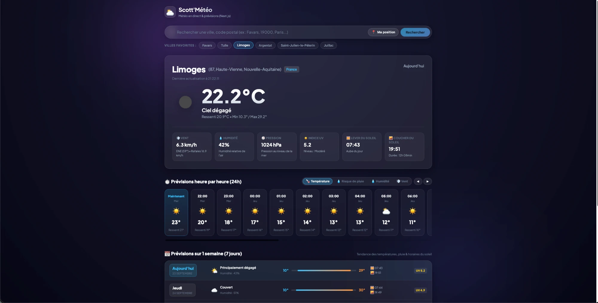
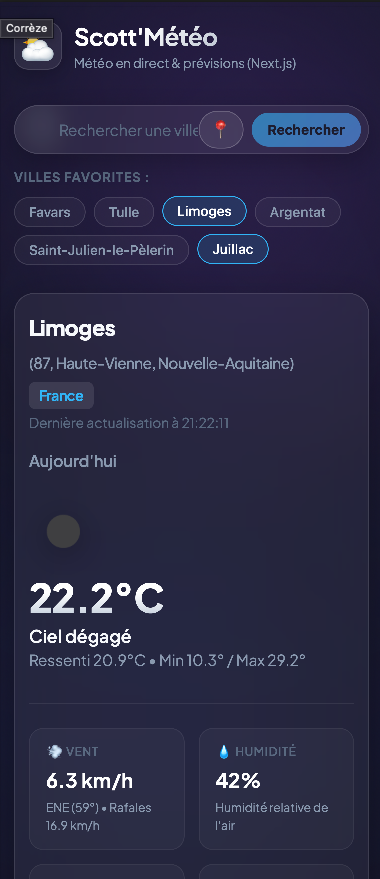

Scott'Météo Application météo auto-hébergée — web, PWA & widget iOS
Une application météo complète — web, PWA installable et widget natif iOS — conçue, développée et déployée de bout en bout sur mon serveur personnel.
🎯 Le projet
Scott'Météo affiche la météo en temps réel avec géolocalisation automatique, prévisions horaires et sur 7 jours, et des thèmes visuels dynamiques selon le temps. Plutôt qu'une simple appli web, le projet couvre toutes les surfaces où on consulte la météo au quotidien : navigateur, écran d'accueil iPhone (PWA) et widget natif — le tout backé par la même API, auto-hébergée gratuitement.
Pourquoi ce projet ?
- Aller au-delà d'un simple site météo : couvrir web, mobile et widget natif avec une seule API
- Pratiquer Next.js 16 (App Router, SSR/ISR) et une vraie stratégie de tests sur la logique critique
- Gérer la fiabilité des données externes (géocodage) avec de vrais scénarios d'échec, pas seulement le cas nominal
Surfaces couvertes
Dashboard web (Next.js), PWA installable sur l'écran d'accueil iPhone, widget natif iOS via Scriptable, API REST publique (/api/*) et un CLI Python (meteo.py) pour interroger la météo directement dans le terminal.
📸 Aperçu


⚙️ Stack technique
| Composant | Choix | Pourquoi |
|---|---|---|
| Frontend | Next.js 16 (App Router), React 19, TypeScript | Server Components + SSR pour un premier rendu instantané, typage strict de bout en bout |
| Rendu | SSR + revalidation ISR (60s) | Données météo fraîches sans re-générer la page à chaque requête |
| Données météo | Open-Meteo, avec repli sur l'API Adresse (data.gouv.fr) | Source gratuite et fiable, avec un filet de sécurité français en cas d'indisponibilité |
| Tests | Vitest | 20 tests unitaires sur la logique de géocodage/repli, la plus sensible aux régressions |
| Déploiement | Docker (build multi-stage, image standalone) | Image de moins de 150 Mo, compatible amd64 et arm64 (Raspberry Pi, NAS) |
| Réseau | Caddy + DuckDNS | Reverse proxy avec HTTPS automatique (Let's Encrypt), nom de domaine dynamique gratuit |
| Infra | Auto-hébergé (Ubuntu) | Aucun coût récurrent d'hébergement |
| Mobile | PWA + widget iOS (Scriptable) | Expérience quasi native sans passer par l'App Store |
🧩 Fonctionnalités
Météo & prévisions
- Géolocalisation automatique au chargement (web et widget)
- Météo actuelle, prévisions horaires (24h) et sur 7 jours, min/max
- Thèmes visuels dynamiques selon la météo (ensoleillé, pluvieux, nuageux...)
Recherche & villes
- Villes favorites en accès rapide (aucun appel réseau de géocodage)
- Recherche universelle : n'importe quelle ville en France ou dans le monde, avec repli automatique multi-source
Multi-surface
- PWA installable sur l'écran d'accueil, chargement quasi instantané
- Widget natif iOS (Scriptable) : température, risque de pluie, heure de dernière mise à jour
- API REST publique avec support CORS pour intégration externe
Fiabilité
Aucune dépendance unique de point de défaillance sur le géocodage : à chaque étape de la cascade (favoris → géocodage mondial → API adresse française), un échec silencieux passe au niveau suivant plutôt que de planter l'application.
🏗️ Architecture
Client (navigateur / PWA / widget iOS)
│
▼
Caddy (HTTPS automatique, reverse proxy)
│
▼
Container Docker — Next.js (SSR)
│
▼
Open-Meteo API ──(repli)──▶ API Adresse (data.gouv.fr)
Cascade de géocodage (recherche par nom de ville) :
1. Ville favorite ────────────► résolution instantanée, aucun appel réseau
2. Open-Meteo (mondial) ──────► géocodage par nom, échelle planétaire
3. API Adresse (data.gouv.fr) ► repli français, 35 000 communes & codes postaux
4. Erreur explicite ──────────► seulement si les 3 niveaux précédents échouent
Géolocalisation inverse (bouton "Ma position") :
1. API Adresse (reverse) ─────► précision maximale en France
2. BigDataCloud (reverse) ────► repli mondial si la France échoue
3. "Ma position" générique ───► dernier repli, jamais d'erreur bloquante
🔧 Défis techniques rencontrés
Le vrai cœur du projet — les problèmes concrets résolus, pas juste la liste de fonctionnalités.
💡 Ce que ce projet m'a appris
- Concevoir une logique de repli robuste face à des sources de données externes peu fiables
- Optimiser une image Docker pour du matériel modeste (Raspberry Pi, NAS ARM)
- Combiner rendu serveur et revalidation périodique (ISR) pour équilibrer fraîcheur des données et performance
- Étendre une même API à plusieurs surfaces (web, PWA, widget natif, CLI) sans dupliquer la logique métier côté serveur